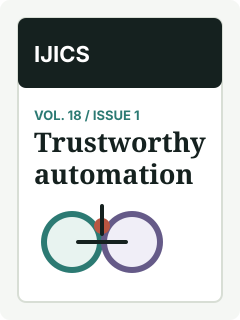
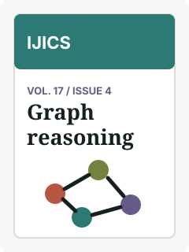
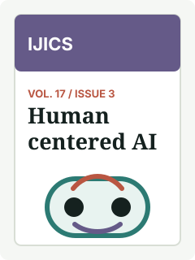

Vol. 18, Issue 2 · July 2026
Editorial selection from the current issue
Latest issue articles are listed for quick scanning. The editorial panel highlights one article with context and a page preview.
Vol. 18, Issue 2 · July 2026
Latest issue articles are listed for quick scanning. The editorial panel highlights one article with context and a page preview.
Call for papers · 30 September 2026
Submissions are invited on robust AI systems, decision support, safety evaluation, and human-centered automation.
Special focus · 15 November 2026
We welcome empirical, systems, and review articles that connect intelligent agents with verifiable deployment evidence.
Research article
Y. Chen, A. Ribeiro · Published July 2026

Review article
M. Tanaka, S. Malik · Published July 2026

Short communication
L. Martinez, H. Singh · Published June 2026
Research article
K. Nielsen, P. Duarte · Published June 2026
System report
N. Ibrahim, R. Cho · Published June 2026

Editorial
The editorial introduces why this article matters in the current issue. Full DOI, citation export, PDF, and license actions belong on the article page.
Open article pageAnnouncements

Topic: robust AI, safety evaluation, and human-centered automation.
Deadline: 30 September 2026
Topic: empirical systems, deployment evidence, and decision support.
Deadline: 15 November 2026News

Article pages now expose DOI, license, article type, issue number, and citation actions in one scanable metadata block.

Board entries now separate public affiliation, role, term status, and the office contact path used for correction requests.
The checklist records required files, ethics statements, funding disclosures, and the official submission domain before authors leave the site.
All Issues

Vol. 18, Issue 1
12 articles · March 2026

Vol. 17, Issue 4
10 articles · December 2025

Vol. 17, Issue 3
11 articles · September 2025